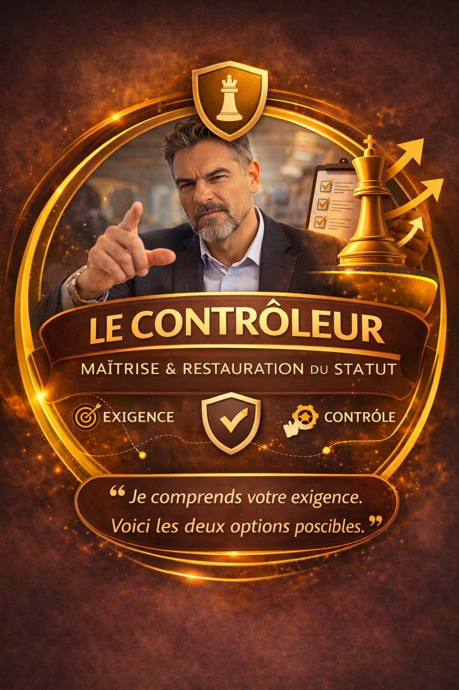
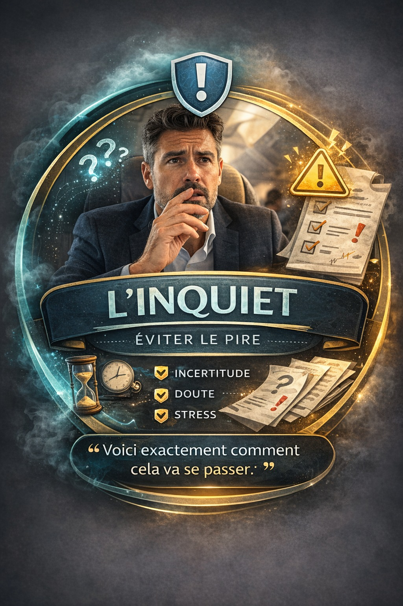
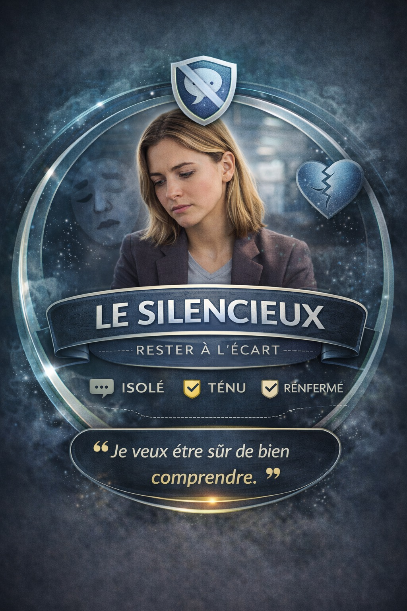
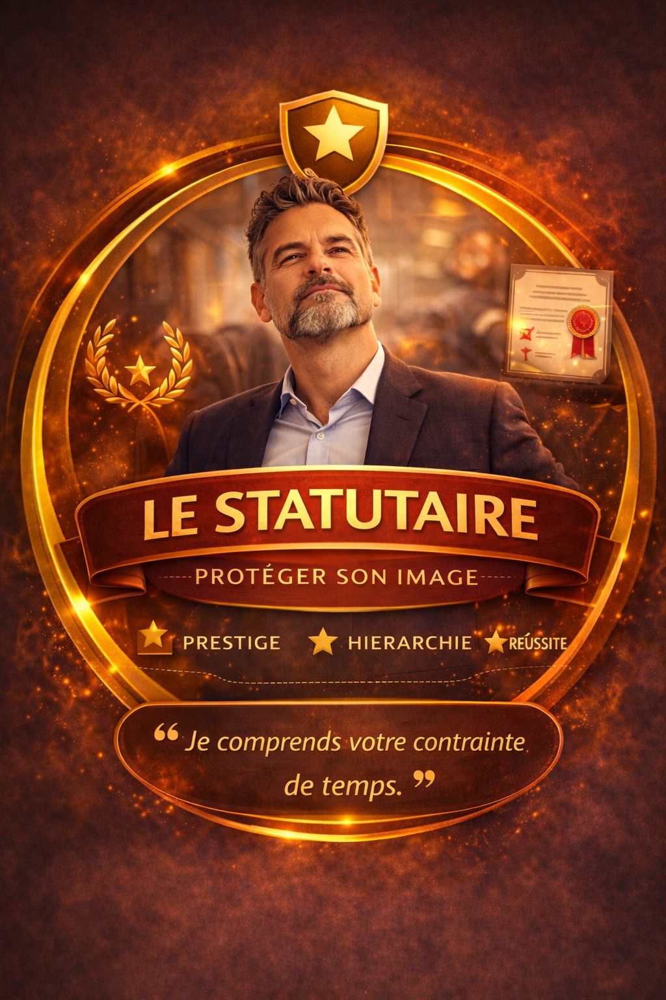
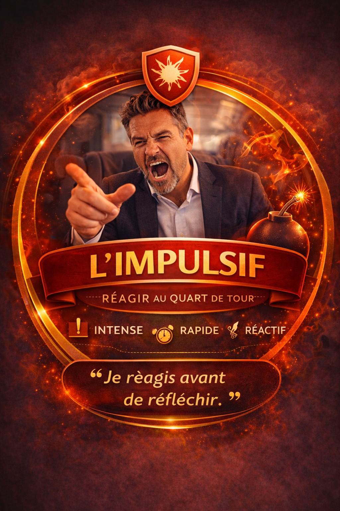
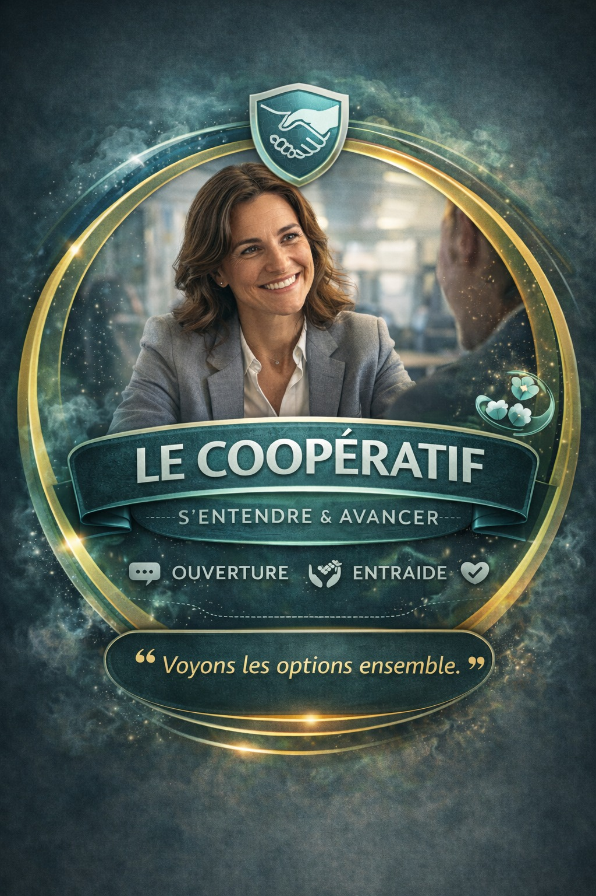

mais un problème de système nerveux ?
Chaque passager est un
modèle prédictif
qui vous parle.
Les tensions au comptoir ne sont pas des incidents de communication.
Ce sont des erreurs de prédiction cérébrales entre deux systèmes nerveux activés.
RUNWAY corrige cela à la racine — avant que le mot soit prononcé.
Six types de passagers. Six schémas prédictifs. Un seul outil pour les lire tous.
Les profils RUNWAY →
Chaque passager active un schéma prédictif identifiable.
Ces profils ne sont pas des typologies de personnalité. Ce sont des organisations dynamiques activées — lisibles en moins de 10 secondes par un agent formé.






Cliquez sur un profil
pour voir les deux représentations
Un conflit au comptoir coûte deux fois.
Chaque tension non désamorcée génère un coût immédiat côté passager — et un coût différé, silencieux, côté agent. Ce double coût est systématiquement sous-estimé dans les bilans RH et satisfaction client.
RUNWAY repose sur quatre prémices
que la neuroscience valide.
Ces prémices ne sont pas des métaphores pédagogiques. Ce sont des mécanismes neurobiologiques documentés qui expliquent pourquoi les formations classiques échouent — et pourquoi RUNWAY réussit.
Chaque passager active un schéma prédictif identifiable.
Ces profils ne sont pas des typologies de personnalité. Ce sont des organisations dynamiques activées — lisibles en moins de 10 secondes par un agent formé.
Cliquez sur un profil
pour voir les deux représentations
Scripts terrain — Profil × Situation.
Pour chaque situation, l'agent dispose d'un script d'ancrage adapté au profil activé. Ces scripts intègrent la dynamique prédictive du passager — ils ne sont pas des réponses génériques, mais des interventions calibrées sur l'état interne du passager.
REC² — Le protocole en 4 temps
4 étapes séquentielles obligatoires. Chaque étape réduit une couche spécifique d'activation neurobiologique. Jamais de saut : R → E → C → C². Ce séquencement est neurobiologiquement fondé — il suit le chemin inverse de l'escalade émotionnelle.
"Je vois que la situation est frustrante. Je comprends que cela vous surprenne."
"La règle existe parce que… ce qui signifie que dans votre cas spécifiquement…"
"Nous avons deux possibilités concrètes… Laquelle correspond le mieux à vos contraintes ?"
"Voyons ensemble la meilleure façon de mettre cela en place pour vous."
RELAY — Séquence terrain
5 phases opérationnelles qui structurent l'intervention superviseur de la régulation préalable jusqu'à la clôture. RELAY intègre la dimension triadique — Passager, Agent, Superviseur — à chaque phase. C'est le cadre de lecture du superviseur régulateur.
Ce que RUNWAY produit. En chiffres.
Données issues de cohortes pilotes déployées dans des environnements aéroportuaires comparables. Mesures à J+30, J+60 et J+90 post-formation.
Un dispositif intégré — salle, terrain, application, ancrage.
RUNWAY n'est pas une formation en salle suivie d'un retour au poste. C'est un système de transformation opérationnel qui s'installe dans la réalité du terrain via des points de contact séquencés conçus pour modifier durablement les automatismes de réponse.
- Cerveau prédictif, énergie libre et erreurs de prédiction (Friston)
- Les 6 profils passagers : dynamiques profondes (L.1 à L.10)
- La triade Passager–Agent–Superviseur : rôles et positionnements
- Diagnostic superviseur : lire la dynamique relationnelle à distance
- Le Souffle (L.0) — autorégulation superviseur : ancrage physiologique
Présentiel
Présentiel
- Protocole RELAY complet : Régulation → Entrée → Lecture → Action → Yield
- Scripts superviseur × 6 profils × 3 niveaux : Persuadeur / Corrigeur / Prise en charge
- Scénarios de simulation filmés : agent compétent, à corriger, prise en charge directe
- Débriefing superviseur : grille d'analyse post-intervention
- Rituels de briefing d'équipe : structures et séquences opérationnelles
- Posture du superviseur régulateur : différencier accompagnement et contrôle
- Créer une culture de sécurité psychologique dans l'équipe terrain
- Rituel de briefing matin et débriefing soir : format opérationnel
- Identification des agents à risque : signaux précoces et interventions
- Plan d'ancrage mémoriel individuel via l'application RUNWAY
Présentiel
à J+6
- Accès aux fiches profil complètes (L.1–L.10) en version superviseur
- Scripts superviseur × situations consultables en temps réel sur le terrain
- Exercice de régulation physiologique guidé (respiration cohérente 4–6)
- Rappels mémoriels quotidiens ciblés : protocoles RELAY et REC²
- Journal de bord superviseur : cas terrain notés et analysés
- Observation de 4 à 6 interactions superviseur / agent / passager
- Feedback en temps réel et corrections dans le flux opérationnel
- Identification des points d'ancrage à renforcer
- Débrief individuel : forces acquises et axes de développement
Terrain
Terrain
- Évaluation terrain en conditions réelles (grille RUNWAY)
- Validation de la posture régulateur dans le contexte de l'équipe
- Ritualisation du briefing / débriefing dans le format d'équipe
- Plan de mentorat : transmission aux agents nouvellement recrutés
- Introduction au modèle prédictif : comprendre les tensions autrement
- Les 6 profils passagers : signaux observables, dynamiques profondes
- Diagnostic rapide terrain : lire un profil en moins de 10 secondes
- Le Souffle (L.0) — autorégulation agent : techniques physiologiques d'urgence
- Protocole REC² — Reconnaître, Expliquer, Choisir, Co-construire
Présentiel
Présentiel
- Protocole RELAY complet : R → E → L → A → Y
- Scripts terrain × 6 profils × 6 situations (excédent, retard, surbooking…)
- Jeux de rôle filmés : analyse des micro-signaux et feedback immédiat
- Pratique de la respiration cohérente 4–6 en condition de stress simulé
- Prise en main complète de l'application RUNWAY terrain
- Fiches profils consultables en contexte réel (avant chaque shift)
- Scripts REC² × situation disponibles en 3 secondes
- Exercice de régulation guidé : 4 minutes avant chaque prise de poste
- Rappels mémoriels ciblés sur les points de fragilité individuels
- Diagnostic rapide passager : outil interactif d'identification profil
à J+2
Terrain
- Observation de 3 à 5 interactions en conditions réelles
- Correction des automatismes en temps réel (micro-signaux, prosodie, posture)
- Renforcement des protocoles REC² et RELAY dans le flux terrain
- Débrief individuel : ancrage des acquisitions et plan J+7
- Évaluation de la disponibilité des protocoles en conditions de flux intense
- Ajustement des scripts terrain selon les situations rencontrées
- Identification des profils passagers les plus activants pour cet agent
- Prescription personnalisée de modules applicatifs de renforcement
Terrain
Terrain
- Évaluation terrain sur grille RUNWAY complète (protocoles + régulation)
- Validation de la gestion autonome des 6 profils passagers
- Score d'ancrage mémoriel via l'application (indicateur rétention J+15)
- Plan individuel de maintenance : fréquence app, rituels de régulation
RUNWAY ne démarre pas avec des hypothèses. Il démarre avec votre réalité.
Le Seuil — Protocole T0 →
Avant le Jour 1, cartographier le réel.
RUNWAY ne démarre pas le Jour 1 avec des hypothèses. Il démarre avec une cartographie précise de l'état de départ — trois voies simultanées, un point de convergence, une baseline qui permettra de mesurer la transformation réelle.
Cliquez sur chaque concept pour lire son contenu détaillé ↓
Mesure la qualité des conditions organisationnelles créées à chaque niveau. Un programme de formation produit des effets durables uniquement si l'environnement soutient leur application. L'IEP est calculé simultanément pour les trois voies.
Conatus Collectif Ω · Point TRIVIUM
Accès sécurisé · Données confidentielles · Résultats instantanés


Chaque jour sans intervention
est un coût mesurable.
RUNWAY est prêt à être déployé. La session d'amorçage peut être activée en 3 semaines. Contactez l'équipe OCTOGO pour définir le calendrier et les cohortes prioritaires.